Assertions (SVA)
Write SystemVerilog assertions, bind them to an instance of the waveform and see every attempt on the waves: where it started, which steps matched, where and why it failed. The same results come out of the command line as Markdown, JSON, JUnit XML or HTML for CI.
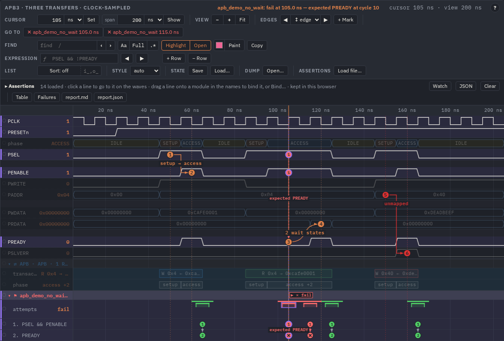
apb_demo_no_wait (PSEL && PENABLE |-> PREADY, wrong on
purpose) is bound to apb_tb; its failing attempt at 105 ns is selected: the cursor is on it, its numbered circles sit on
PSEL, PENABLE and PREADY, the flag ▶ ✕ fail marks its start and end, the red
expected PREADY is the reason. Under the signals the assertion's own group: the attempts and a row per step.What it does
An assertion is checked over a dump, not in a simulator. You load assertion files (any SystemVerilog: checker modules, packages,
bind statements; the parser takes what assertions need and skips the rest) and bind an assertion to an
instance of the waveform — a scope path such as apb_tb or tb.dut.u_fifo. Its signal names are looked up
in that instance, it is evaluated on every edge of its clock, and every attempt (one per clock tick where it starts) gets
a result:
| Result | Meaning |
|---|---|
| pass | the property held for this attempt |
| fail | it did not; the attempt carries the cycle where it failed and a reason (expected PREADY at cycle 10,
no ack within [1:3]) |
| vacuous | the antecedent of an implication did not match, so there was nothing to check (counted, not drawn) |
| disabled | the disable iff condition was true during the attempt |
| active | not ended: the dump ended before a verdict |
| capped | no verdict: the thread limit dropped some of its threads (--max-threads, default 256) |
Two engines give the same results from one Rust code base: in the page as WebAssembly (wavelens/sva.js +
wavelens/sva.wasm.js), and the sva command line (bin/linux-x86_64/sva, or make
sva-build), which mkhtml.py uses when it builds a page, so the page opens with the results already there.
The subset
Concurrent assert / assume / cover property with clocking (@(posedge clk),
default clocking), disable iff (and default disable iff), |-> |=>,
##n ##[m:n] ##[m:$], [*n] [*m:n] [->n]
[=n], and or intersect within throughout first_match not, if/else,
nexttime always eventually s_eventually, $rose $fell $stable $past $changed, $onehot $onehot0
$isunknown $countones, named sequence / property with arguments, packages, enums, parameters, macros,
`ifdef — in modules, checkers, interfaces and programs. Values are 4-state. Not in it: until and friends,
local variables, multi-clock properties, accept_on / reject_on, immediate assertions. A construct outside
the subset is an error that names it and its position; the rest of the file still loads. The full grammar:
docs/sva/LANGUAGE.md; how attempts are evaluated: docs/sva/ENGINE.md.
Writing a checker
The APB example (examples/apb/apb.sva) is a checker module whose ports connect by name to the testbench, with one
assertion that is wrong on purpose so a failure shows. An excerpt:
// The two bus phases of APB3, as seen on PSEL / PENABLE.
`define SETUP (PSEL && !PENABLE)
`define ACCESS (PSEL && PENABLE)
module apb_checks import apb_pkg::*; (
input logic PCLK,
input logic PRESETn,
input logic PSEL,
input logic PENABLE,
input logic PREADY,
input logic [7:0] PADDR,
input phase_t phase
// …
);
default clocking @(posedge PCLK); endclocking
default disable iff (!PRESETn);
// Operating states: SETUP lasts one cycle and always moves to ACCESS.
apb_setup_then_access: assert property (`SETUP |=> `ACCESS)
else $error("APB: SETUP not followed by ACCESS");
// A read of a mapped register takes two wait states, then PREADY.
apb_read_waits: assert property (
`SETUP && !PWRITE && PADDR[7:4] == 0 && PADDR[1:0] == 0 |=>
!PREADY[*2] ##1 PREADY
);
// Deliberately wrong (the slave has read wait states): shows a fail trace.
apb_demo_no_wait: assert property (`ACCESS |-> PREADY)
else $error("demo: a wait state");
// A read with its two wait states.
apb_cov_read_wait: cover property (
`SETUP && !PWRITE ##1
(`ACCESS && !PREADY)[*2] ##1
PREADY
);
endmodule
bind apb_tb apb_checks u_apb_checks (.*);Check that it parses before you go further: bin/linux-x86_64/sva parse examples/apb/apb_tb.sv examples/apb/apb.sva
(the CLI committed in the repository; the examples below write sva for it — put bin/linux-x86_64 on your
PATH, or make sva-build builds one from the sources). The files are one
compilation unit, in order: the testbench comes first because it declares apb_pkg (the enum phase_t).
Each assertion needs a label (apb_read_waits:): it is the name you bind, search and see in the panel. The
labels of every loaded file share one list; the same label in a second module becomes module.label.
Loading and binding
In the config
List the files and the bindings in the config file; "assert" may be a * pattern, "scope" is
an instance path ("": the top of the view):
"sva": ["apb_tb.sv", "apb.sva"],
"bind": [{ "assert": "*", "scope": "apb_tb" }]That is what examples/apb/apb.config.json has. mkhtml.py parses the files (sva parse --json; a
parse error becomes a note in the page, not a failed build) and evaluates every binding over the dump, so the page opens with the
assertions bound and drawn. "sva": false (or mkhtml.py --no-sva) leaves the engine out of the page
(about 410 kB).
On the command line
make html WAVES=work/x.vcd SVA="checks/*.sv" BIND="a_req_ack@tb.dut,apb_*@tb.u_apb" # bound and evaluated
make config WAVES=work/x.vcd SVA="checks/*.sv" # writes "sva" and "bind" linesmake config … SVA= (mkconfig.py --sva) matches every assertion against every instance of the dump and
writes one "bind" line per assertion and instance where all its signals resolve; "show": true when that
instance is the only one, else false with the number of candidates in a "comment" — set
"show": true on the ones you want. Run it again and your choices, your own lines and keys stay.
In the page
A viewer with the engine (every page of make html, wavelens/viewer.html; in your own page the scripts
sva.wasm.js and sva.js) has an assertions group in its bar: Load file… reads more
.sv / .sva files into this browser. Then bind a loaded assertion in one of two ways:
- Drag its line from the panel onto a module in the names column. While you drag, the modules that have all its signals turn green; the others fade and say what they miss.
- Bind… on its line lists those instances; click one.
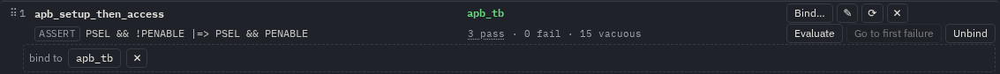
apb_tb); ✕
closes the list. When no instance has them, it says so: no instance has PSEL, PENABLE.How names resolve
One rule everywhere — the page, mkconfig.py --sva and sva eval --resolve scope — so a binding that works
in one works in the others. A name n of an assertion bound to instance S is, in this order:
- the variable
S.n; - the signal shown as
n(an"alias"of the config); - the variable whose name without the ignored prefixes (
sortIgnore, e.g.["i_", "o_", "s_"]) equalsnwithout them:validfindss_valid. Two candidates (i_validando_valid) are an error naming both, never a guess.
u_fifo.full is looked up below S. Only the clock may come from a scope above. A select wider than the
signal (data[15:8] of an 8-bit data) does not bind. A binding that cannot resolve shows cannot bind:
missing … on its line.
The assertions panel
The panel sits under the bar. Folded it is one line, ▸ Assertions with the number loaded (setting
svaOpen: open when the page opens); the bar's go to group has a button per failure (at most
six).
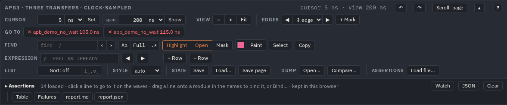
apb_demo_no_wait (105 ns, 115 ns); the
expression field; Load file… in assertions; the panel's
header with Watch, JSON, Clear, Table,
Failures, report.md, report.json.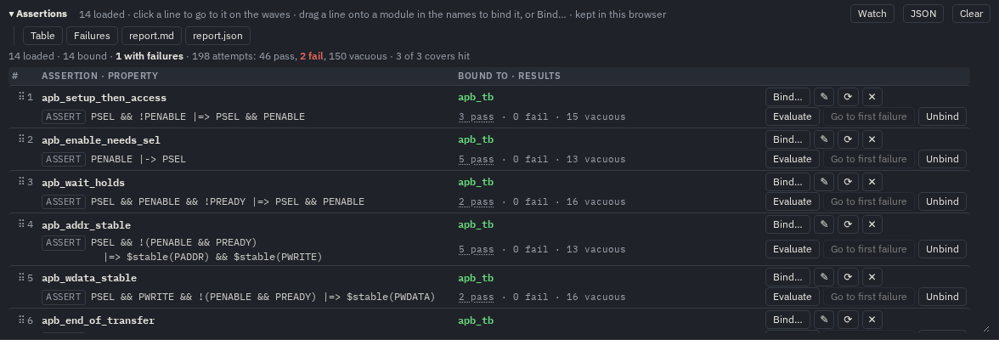
| Part | What it is |
|---|---|
| totals | 14 loaded · 14 bound · 1 with failures · 198 attempts: 46 pass, 2 fail, 150 vacuous · 3 of 3 covers
hit — over this view's waves (here 0–200 ns; the command line counts the whole dump) |
| ⠿ # | the grip to drag the line onto a module, and its number |
| name, kind, property | the label, ASSERT / ASSUME / COVER, the property text; the
tooltip of the property gives the file, the line and the signals it needs |
| bound to | the instance path (green when bound), unbound, or cannot bind with what is missing; ⓘ when the binding has notes |
| results | 3 pass · 2 fail · 13 vacuous (covers: their hits). A count is a link: click
2 fail to show only those attempts on the waves and list them under the line (the first 200) |
| Bind… | the instances where all its signals are (above) |
| ✎ | edit the assertion here (see Edit and run again) |
| ⟳ | read its file from the disk again |
| ✕ | remove the assertion from the list, with its bindings |
| Evaluate | run the binding again over the waves of this view (in a Web Worker when it is long) |
| Go to first failure | select its first failing attempt |
| Unbind | remove this binding; the assertion stays loaded |
| Watch | check every second the files read with ⟳ and evaluate them again when one changes (Chrome / Edge: the File System Access API) |
| JSON | the "bind" list (and the "exprs") to paste into the config;
copied to the clipboard |
| Clear | forget this browser's files and bindings for the page; the page's own come back |
| Table, Failures | the numbers (see Numbers) |
| report.md, report.json | download the report of this view's bindings: the
tables as Markdown, or the results with the page's meta (what sva report reads) |
With several bindings of one assertion, each gets a line of its own under it (instance, results, buttons). Loaded files, bindings and small results are kept in this browser over a reload.
On the waves
Every bound assertion is a group directly under the instance it is bound to: ⚑ name · 3 pass · 2 fail, red when it fails, foldable, found by find like a module. Inside:
- attempts — a bracket per attempt from its first to its last cycle: green pass; a failure green up to its last matched step and red from there to where it failed; grey disabled; an active (not ended) or capped one open at its end, striped. Where attempts crowd they become bars; three rows, more merged with a count. A thin strip above has one mark per cycle, so a failure is a red tick even with the whole dump in view. The value column shows the attempt at the cursor.
- a row per step of the sequence (
1. PSEL && PENABLE,2. PREADY): a numbered circle at every match, a red ✕ where an attempt failed. - arrows along an attempt's steps with the cycles between them (
2T), and a dashed red one to the failure with its reason. Drawn for every attempt on screen when there are fewer than 20, else for the selected one. - the bound signals again (
= PCLK,= PSEL…), so the steps and the signals they read are side by side; settingsvaSignals:"view"(default, in viewers),true(also static SVGs),false.
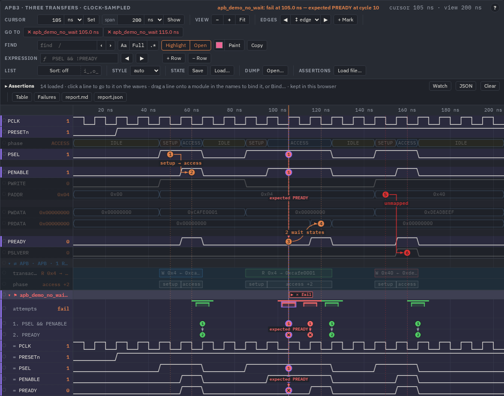
⚑ apb_demo_no_wait under apb_tb: attempts (green passes, the two red
failures), the steps 1. PSEL && PENABLE and 2. PREADY with their circles and ✕, then
= PCLK, = PRESETn, = PSEL, = PENABLE, = PREADY.Selecting an attempt
Click a bracket or a circle (or a failure in the panel, a go to button, ]f): the attempt is
selected. The cursor goes to its start and the view moves to it at the same zoom; its circles and arrows come to the front,
the signals it read are highlighted, and its circles are drawn on those signals too — the names in the step's label, so
1. PSEL && PENABLE puts a 1 on PSEL and on PENABLE. Its start and end are dashed
lines across the rows with flags in the group's band: ▶ start and how it ended — ✓ pass,
✕ fail, … not ended, ⊘ disabled, … capped (one flag, ▶ ✕ fail, when it
starts and ends in one cycle, as in the first picture). The title line says it in words: apb_demo_no_wait: fail at 105.0 ns —
expected PREADY at cycle 10. Esc clears it.
Going from one to the next
| Do | Goes to |
|---|---|
| click a line of the panel | that assertion: its group opens with its first failure (else its first pass) selected, the attempt in the middle of the window; click again for its next attempt |
| ]a / [a | the next / previous assertion (its first failure, else its first pass) |
| ]f / [f | the next / previous failure of any assertion |
| go to buttons | a failure each (at most six) |
| Esc | clears the selection (and the search, the highlight) |
The keys work once the waves have the focus (click the waves or a name). With more than three assertions on one instance the ones
without failures start folded; "svaShow": ["apb_*"] limits which are drawn at all.
Why: an attempt taken apart
With an attempt selected the panel shows Why: the assertion's booleans — its steps, an if condition,
disable iff — each taken apart into its operands (PSEL && PENABLE → PSEL,
PENABLE; $rose(req) → req), one column per cycle of the attempt (at most 64). 1 is green, 0
grey, x red, buses in hex. A ringed cell is where a step matched, the red one is where the attempt failed: the operand that broke
it is read off directly. Click a cycle's header to put the cursor there; ✕ or Esc closes it.
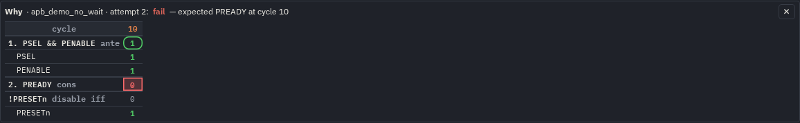
apb_demo_no_wait, one cycle (10): the antecedent PSEL && PENABLE
matched (ringed 1, both operands 1), the consequent PREADY is 0 (red), !PRESETn of disable iff is
0, so the attempt was not disabled — the slave is in a wait state.Edit and run again
You do not need to rebuild the page to change a check.
- Press ✎ on the assertion's line. Its statement opens under the line — from its label to the
;, with theelse $error(…). - Change it and press Apply (ctrl+Enter). Its file is parsed again in the page and only the bindings of the assertions whose text changed are evaluated again; the others keep their results. The attempts, steps and arrows on the waves follow.
- A text that does not parse is not applied: the editor keeps it and says where it stops.
- The edited file is this browser's copy, kept over a reload; the lines that differ from the page's file are marked edited. Revert to the page's in the editor (or Clear) brings the page's file back. Copy the text into your source when you are happy with it.
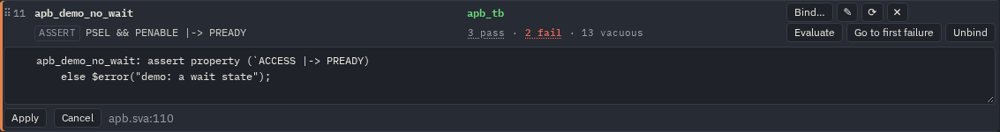
apb_demo_no_wait in a text box, Apply,
Cancel, and where it comes from: apb.sva:110.To work in your own editor instead: ⟳ reads the assertion's file from the disk again. The first time the browser asks you to pick the file (Chrome and Edge keep it: after a reload only the permission is asked again; Firefox and Safari ask every time). Changed assertions are marked changed and evaluated again. Watch in the panel's header (Chrome / Edge) checks those files every second: save in the editor and the page follows by itself.
The static SVG figures of a page keep the results the page was built with; editing in the page changes the viewers.
Expressions
The expression field in the bar takes any expression of the signals, written as in an assertion:
PSEL && !PREADY, state == pkg::WAIT && timeout, addr[7:4] == 4'h3,
$rose(req). Without a clock it is valued after every change of its signals; @(posedge PCLK) … samples it at
the clock's edges like an assertion. Names are looked up from the selected signal's module up to the top (or give a full path);
package constants come from the loaded files.
- Enter / shift+Enter (or ◀ ▶) — the cursor to the next / previous time it becomes true, round the
ends; the field says which one of how many (
3/3). - + Row — draw it as a signal in the group ƒ expressions under the top (a bus when it is wider than a bit). Click a row's name to put it back in the field; − Row removes it.
- The rows are kept in this browser; JSON lists them as
"exprs". In a config,"exprs": ["PSEL && !PREADY", {"expr": "…", "scope": "tb.dut"}](orvcd2wavedrom.py --expr) puts them in the page, its static SVG included.
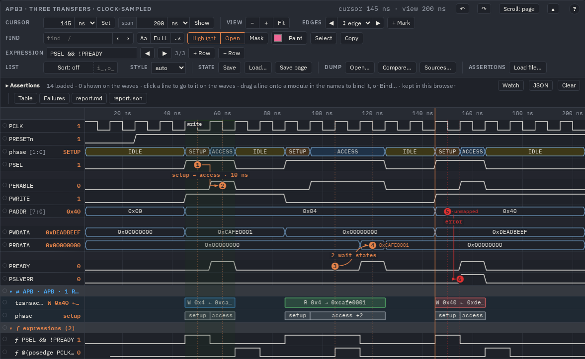
PSEL && !PREADY (true in every SETUP and wait state; Enter stepped to the
third, 145 ns, 3/3) and @(posedge PCLK) $rose(PENABLE), sampled at the clock's edges, in the group
ƒ expressions (2).Numbers
Table: one row per binding — attempts, pass, fail, vacuous, disabled, active, capped, the first and last failure (links), the longest attempt and the antecedent → consequent latency (min / avg / max cycles over the passing attempts: what a handshake check is about), the cover hits, the notes. Failures: every failed attempt by the time it was found, with its reason, filtered by assertion, Copy as text; a row selects the attempt (the first 500 are listed, the downloads have the rest).
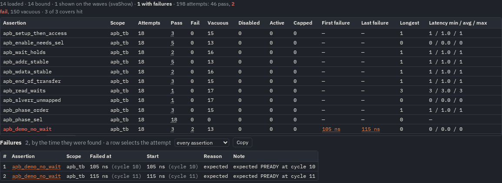
apb_read_waits: latency 3 / 3.0 / 3 (two wait states, then PREADY);
apb_demo_no_wait: first failure 105 ns, last 115 ns; below, both failures with expected PREADY at cycle 10 /
11.A page built by mkhtml.py also ends with a printable Assertions section: the bindings over the whole dump, the
same columns, the failures.
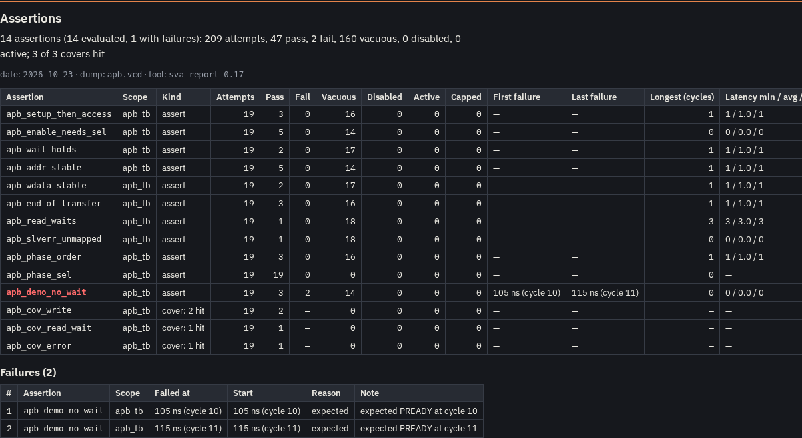
From the command line (CI)
The same engine runs without a browser. sva eval prints a line per assertion and exits with a status a CI job can use:
$ bin/linux-x86_64/sva eval --waves out/examples/apb/apb.vcd --scope apb_tb \
--sva examples/apb/apb_tb.sv --sva examples/apb/apb.sva
apb_setup_then_access assert 19 attempts: 3 pass, 0 fail, 16 vacuous, 0 active, 0 disabled
…
apb_read_waits assert 19 attempts: 1 pass, 0 fail, 18 vacuous, 0 active, 0 disabled
apb_demo_no_wait assert 19 attempts: 3 pass, 2 fail, 14 vacuous, 0 active, 0 disabled · first fail at cycle 10 (105 ns): expected PREADY at cycle 10
apb_cov_write cover 2 matches in 19 attempts · first at cycle 6 (65 ns)
apb_cov_read_wait cover 1 match in 19 attempts · first at cycle 12 (125 ns)
apb_cov_error cover 1 match in 19 attempts · first at cycle 16 (165 ns)
sva: 14 assertions over 21 cycles; read 0.018 s, total 0.020 s
$ echo $?
1--attempts adds a line per attempt: its cycles, the time it started, the result and its trace (the elements
s1, s2 … and the cycle each matched at), a failure's reason after --:
$ sva eval … --assert apb_read_waits --assert apb_demo_no_wait --attempts
apb_read_waits assert 19 attempts: 1 pass, 0 fail, 18 vacuous, 0 active, 0 disabled
@9..12 (95 ns) Pass [s1@9 s2@10 s2@11 s3@12]
apb_demo_no_wait assert 19 attempts: 3 pass, 2 fail, 14 vacuous, 0 active, 0 disabled · first fail at cycle 10 (105 ns): expected PREADY at cycle 10
@6..6 (65 ns) Pass [s1@6 s2@6]
@10..10 (105 ns) Fail [s1@10] -- expected PREADY at cycle 10
@11..11 (115 ns) Fail [s1@11] -- expected PREADY at cycle 11
@12..12 (125 ns) Pass [s1@12 s2@12]
@16..16 (165 ns) Pass [s1@16 s2@16]Reports
sva eval --waves x.fst --scope tb.dut --sva checks.sva --report report.md --junit report.xml # exit 1 on a failure
sva eval --waves x.fst --scope tb.dut --sva checks.sva --report nightly.json # results + meta
sva report report.json nightly.json --md report.md --junit report.xml --html report.html # several runs
make sva-eval WAVES=x.fst SVA="pkg.sv checks.sva" SCOPE=tb.dut ARGS="--junit report.xml" # the same through make (builds the CLI first: Rust)--report picks the format by the extension: .md, .html, .xml (JUnit) or
.json (the results with the meta — the same form as the page's report.json, so a run in CI and a
report downloaded from a page merge with sva report; over several files a Source column tells the runs apart). JUnit has
one test case per assertion: a failure; an error when attempts had no verdict (capped); skipped when not evaluated or a cover never
hit. The texts list at most 20 failures per assertion (--max-failures N, 0 = all; the JSON has every one).
| Exit | Means |
|---|---|
| 0 | everything evaluated passed |
| 1 | a failure, or an attempt without a verdict (capped) |
| 2 | nothing checked as asked: a usage or syntax error, a signal not in the dump, no assertion, a file that does not read |
Other options of sva eval: --assert NAME (some only), --from / --to (a window),
--x fail|false (how an x is taken), --vacuous (list vacuous attempts too), --resolve up|scope,
--ignore-prefix i_,o_, --alias NAME=PATH, -D NAME[=VALUE], --max-threads N,
--out results.json; sva --waves DUMP --info lists a dump's scopes, variables, widths and enum tables. sva vcd x.fst --out x.vcd writes an FST
as VCD text (enum tables included), for a tool that reads only VCD.
sva <command> --help has them all.
In a static SVG
A "render": "svg" view draws the same groups with every attempt's arrows, a legend of the steps (with their role:
antecedent, consequent, condition) and the first failure (else the first attempt) of each assertion on its signals with its start and
end flags. "config": {"svaShow": [...]} in the view picks which assertions it draws.
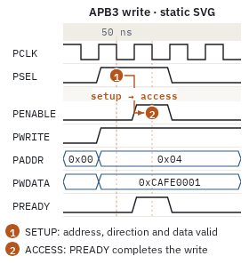
apb_setup_then_access and apb_end_of_transfer
(svaShow): their attempts, steps, ▶ start / ✓ pass flags and the legend of the steps under the
bookmark texts.Settings
| Key | Default | Meaning |
|---|---|---|
svaOpen | false | the assertion list open when the page opens |
svaShow | all | which assertions are drawn on the waves (labels, * patterns) |
svaSignals | view | repeat the bound signals under the steps: in viewers
(view), also in static SVGs (true), never (false) |
The colours are tokens of the theme: sva-pass, sva-fail, sva-disabled,
sva-active, sva-capped, hl8 in colors. The results of a binding are in
view.sva.bindings[i].results, the results JSON of ENGINE.md.
Next: the viewer for the rest of the tools on the waves, AI agents for
sva_check asked by an agent.